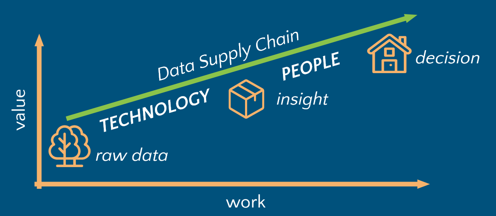

What if I told you that there is no data science?
Or data analytics or engineering?
Just logistics.
All these lines of work are in service of data supply chain.
Supply chains haven’t been on our minds much, until the COVID pandemic brought along issues with getting all kinds of stuff we take for granted. We’ve learned to associate supply chains with the movement of physical goods. Indeed, it’s been the case for millenia: when people found something valuable, others found ways to get it. Did you notice a bit of an implied data exchange in the previous sentence? Merchants need a way to tell buyers what they have, and collect the data on what they need. Data has always played a role in supply chains. Sometimes just this data is precious. In the spring of 2020 I was working in a hospital supply chain, and “WHO HAS MASKS?” was a multi-million dollar question.
Let’s take a closer look at supply chains built around data, and define the data supply chain while we’re at it. Data supply chain is a sequence of sociotechnical processes for building and distributing data products. There are two major steps in a data supply chain. We collect, enhance, and analyze data to derive insights. We use insights to make decisions. Much like in the physical goods world, smart use of technology confers a competitive advantage.

Fully human, as well as fully automated data supply chains are all around us. Upon collecting some data from your fridge and pantry, the insights, decisions, and actions that will make food appear on your table tonight will be mostly made by you (though this is changing). In contrast, your thermostat makes decisions to cool or heat your home all by itself, based on insights derived from processing data from temperature sensors. You can certainly find similar examples in organizations, but if you attempt to trace the lifecycle of some recent decisions, you might observe that the extent of human involvement increases along with product maturity. The specifics of how we handle the first step are mainly technical (think scientific instruments, data pipelines, databases, dashboards). The second step is a lot more about people (think meetings, presentations, publications).
When we view the process of value creation from data from the lens of the data supply chain, it makes perfect sense why we care about data quality and governance, as well as technology required to process raw data. If you run a restaurant, it would be unwise to make breakfast from rotten eggs and rusty cookware. But you also need good servers to deliver the food and help the guests decide what to eat.
How hard can it be to not bring rotten eggs to the kitchen?
How hard can it be to “serve” an insight?
Which of the two steps have you found more challenging in your work?
#datasupplychain #insightdelivery #datastrategy